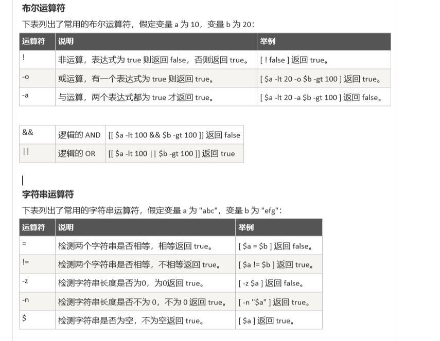
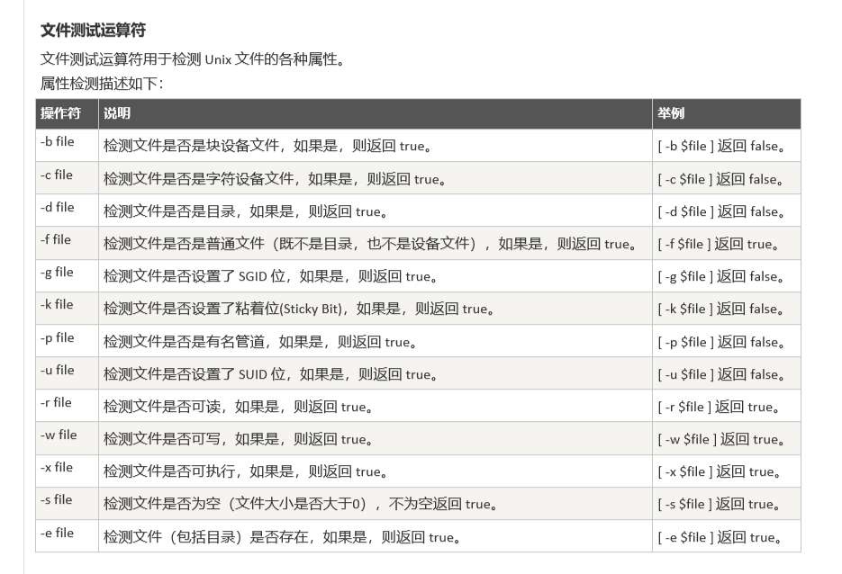
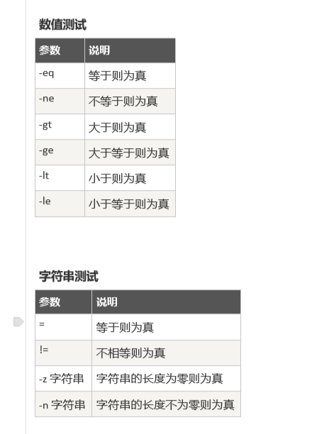
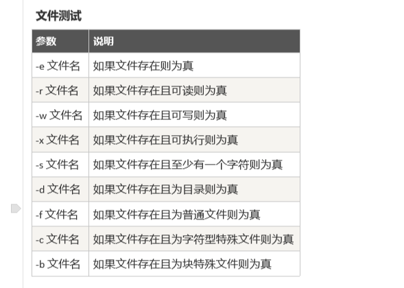

同行的小伙伴都会shell脚本，就我不会！！！我也要开心的耍起来呀！！！

基础语法笔记：
1、在编辑shell脚本时 先编写 ： $ #!/bin/bash ——! 相当于一个约定的标记，它告诉系统脚本需要什么解释器来执行。
简单例子：
!/bin/bash
Echo “学习是我快乐”
2、在定义变量名时,等号两边，不能有空格。使用一个定义过的变量名，只需要在变量名前面加美元符号即可。
简单例子：
!/bin/bash
You_name=”小明”
Echo ${your_name}
3、定义只读变量： readonly命令 unset删除变量,不能删除只读变量
简单例子：
!/bin/bash
readonly you_name=”小明”
4、字符串拼接：（可以单引号/或双引号）输出时 加井号号可输出 当前字符串的长度
a=”我得名字叫：”
b=”小明”
c=’我得名字叫坐：’${b}’’
echo ${井号c}
数组
Sehll 支持一维数组，不支持多维数组
定义
my_list=(1,2,3,4,5,6,7)
echo ${my_list}
注释
以 井号 号注释
多行注释格式：
:<<EOF
注释内容…
注释内容…
注释内容…
EOF
脚本传参
执行脚本时，传递参数，脚本 以 $1 为传递的第一个参数，以此类推，$1、$2、……
echo “传递的第一个参数：$1”
echo “传递的第二个参数：$2”
echo “传递的第三个参数：$3”
执行： ./ test.sh 1 2 3



传参说明：
参数处理 说明
$ 传递到脚本的参数个数
$* 以一个单字符串显示所有向脚本传递的参数。
如”$*”用「”」括起来的情况、以”$1 $2 … $n”的形式输出所有参数。
$$ 脚本运行的当前进程ID号
$! 后台运行的最后一个进程的ID号
$@ 与$*相同，但是使用时加引号，并在引号中返回每个参数。
如”$@”用「”」括起来的情况、以”$1” “$2” … “$n” 的形式输出所有参数。
$- 显示Shell使用的当前选项，与set命令功能相同。
$? 显示最后命令的退出状态。0表示没有错误，其他任何值表明有错误。
运算
在bash中不支持数学运算，可以通过其他命令来实现：如awk 和expr
Expr 是一款表达式计算工具。两数相加 使用 包含，表达式和运算符之间要有空格。
简单例子：
val=
expr 2 + 2
echo “两数之和为 : $val”
test 命令：
Shell中的 test 命令用于检查某个条件是否成立，它可以进行数值、字符和文件三个方面的测试。
举个例子：
num1=100
num2=100
if test $[num1] -eq $[num2]
then
echo ‘两个数相等！’
else
echo ‘两个数不相等！’
fi



ps ：
在编辑完成后 执行脚本时 ，发现 报错：tesh.sh: line 10: syntax error: unexpected end of file
问题原因：windows 下编辑的sh 脚本 格式 是 dos ，在liunx 下运行，要修改成 unix格式。
解决办法： vi编辑文件 ，输入 : set ff=unix 回车 保存退出 即可解决！

呼~第一篇更新完了，成为技术大佬的路上，又前进了一小步！ 加油！加油！